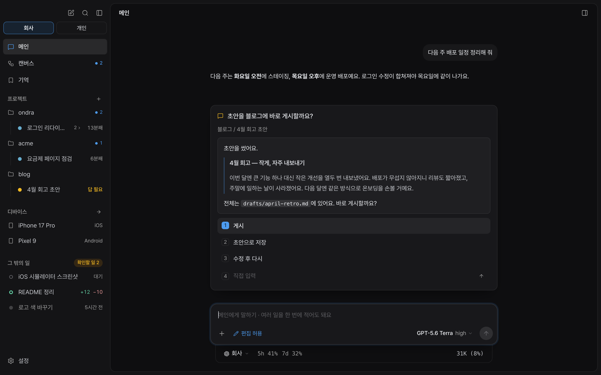

에이전트 탭은 이제 닫아도 돼요.
할 일을 채팅에 한꺼번에 적으면 Ondra가 작업으로 나눠 동시에 돌려요. 내가 골라야 할 게 생기면 그때 물어봐요.
작업이 “다 했어요”라고 하면, 기록과 맞춰 봐요.
보고 내용을 작업이 실제로 돌린 명령, 바꾼 파일과 비교해요. 확인이 안 된 항목엔 “확인 안 됨”이 붙어요.
- 앱을 바꾼 작업은 그 앱을 실행해서 눌러 보고 스크린샷을 남겨요.
- 위험한 변경은 끝나기 전에 서브에이전트 두 개가 설계와 코드를 따로 검토해요.
- 결과에는 diff, 전후 스크린샷, 영상, 테스트 결과가 붙어 와요.
“로그인 후 대시보드로 가도록 고쳤어요. 테스트도 통과했고, 화면도 확인했어요.”
- 테스트
pnpm vitest run auth· 7개 통과실행 기록과 일치 - 파일
src/router.ts,src/auth/session.ts파일 있음 - 화면로그인 후
/dashboard스크린샷확인 안 됨 스크린샷 기록이 없어 작업에 다시 보냈어요 · 2/2
작업마다 지금 뭘 하는지 캔버스에 나와요.
메인에 말한 일은 프로젝트별 작업으로 나뉘어 동시에 돌아가요. 카드에는 작업이 쓰는 도구와 몇 단계째인지가 떠요.
정해야 할 때만 물어봐요.
작업이 내가 골라야 하는 지점에 오면 메인에 선택지 카드가 올라와요.
- 창이 뒤에 있어도 작업이 끝나거나 답이 필요하면 알림이 와요.
4월 회고 — 작게, 자주 내보내기
이번 달엔 큰 기능 하나 대신 작은 개선을 열두 번 내보냈어요.
- 4
새 세션에 배경을 다시 설명하지 않아도 돼요.
이어가기
긴 작업은 한 일과 찾은 것, 다음 단계, 증거를 정리해 새 세션에 넘겨요. 끝난 작업에 이어서 요청하면 앞 결과에서 시작해요.
메모리
쓰다가 알게 된 취향과 교훈은 메모리에 저장돼요. /remember로 바로 저장할 수 있고, 메모리 화면에서 고치면 돼요.
프로젝트 채팅
프로젝트마다 채팅이 따로 있어요. 거기서 시킨 작업은 그 프로젝트 폴더에서 시작해요.
매일 시키던 일은 루틴으로.
정한 시간이 되거나 GitHub에서 일이 생기면 작업이 시작돼요. 채팅에 “평일 9시마다 …”라고 쓰면 루틴을 만들지 묻는 카드가 떠요.
- GitHub에서는 새 이슈나 PR, 리뷰 요청, 내 PR의 댓글, CI 실패, 새 릴리스에 맞춰 시작할 수 있어요.
오래 걸리는 일은 다른 Mac에서 돌려요.
다른 Mac을 연결하면 그 Mac의 프로젝트가 사이드바에 나와요. 작업은 그 Mac에서 돌아서 노트북을 덮어도 멈추지 않아요.
- 연결은 종단 간 암호화돼요. 연결된 Mac은 내가 허락한 워크스페이스와 프로젝트만 볼 수 있어요.
- 1노트북을 덮어요.
- 2작업은 책상 위 Mac에서 계속돼요.
- 3다시 열면 결과가 와 있어요.
브라우저와 Mac 앱도 써요. 내 커서와 포커스는 안 가져가요.
브라우저
작업마다 자기 브라우저 탭에서 페이지를 열고 클릭하고 입력해요. 구석의 작은 창에서 실시간으로 볼 수 있어요. 비밀번호는 macOS 키체인에서 채워서 모델에는 안 보여요.
Mac 앱
권한을 주면 Mac 앱을 뒤에서 조작해요. 내 커서와 포커스는 쓰지 않으니 그동안 다른 일을 해도 돼요. Ondra가 누르는 곳은 별도 커서로 보여요.
모바일
iOS 시뮬레이터와 Android 에뮬레이터에서 앱을 확인하고 스크린샷을 남겨요. Ondra 안에서 기기를 조작할 수도 있어요.
딥리서치
질문을 나눠서 출처를 찾고, 인용이 원문과 맞는지 확인해요. 답과 근거는 보고서와 PDF로 나와요.
50초 소개 영상
실제 앱 화면

자주 묻는 질문
무료예요?
네, 지금은 무료 베타예요. 새 버전이 나오면 앱에서 알려 줘요.
뭐가 필요해요?
Apple silicon Mac, macOS 13 이상. 처음 열면 설정에서 쓰는 AI 모델 계정을 연결하세요. Mac 앱 조작과 화면 캡처에는 손쉬운 사용·화면 기록 권한이, 모바일 확인에는 Xcode의 iOS 시뮬레이터나 Android 에뮬레이터가 필요해요.
작업은 어디서 돌아가요?
내 Mac에서요. 다른 Mac을 연결했다면 그 Mac 프로젝트의 작업은 그 Mac에서 돌아요. 익명 사용 통계는 설정에서 끌 수 있어요.
macOS가 처음 실행을 막아요.
Finder에서 앱을 오른쪽 클릭하고 열기를 고르세요. 그래도 막히면 GitHub 릴리스에서 받은 앱이 맞는지 확인하고, 터미널에서 xattr -dr com.apple.quarantine /Applications/Ondra.app를 한 번 실행하세요.